Aim:
To bulid an update function which will allow the customer to change a pizza quantity, remove a pizza order from order and add another pizza.
Final Output: (screenshot)
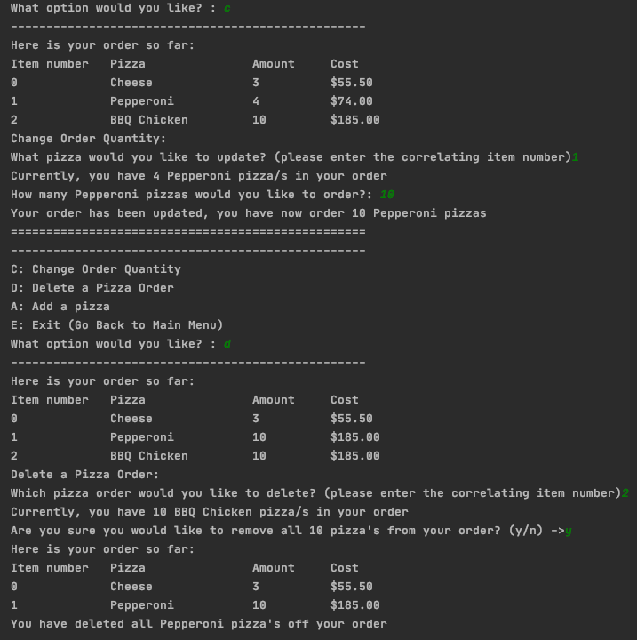Planning
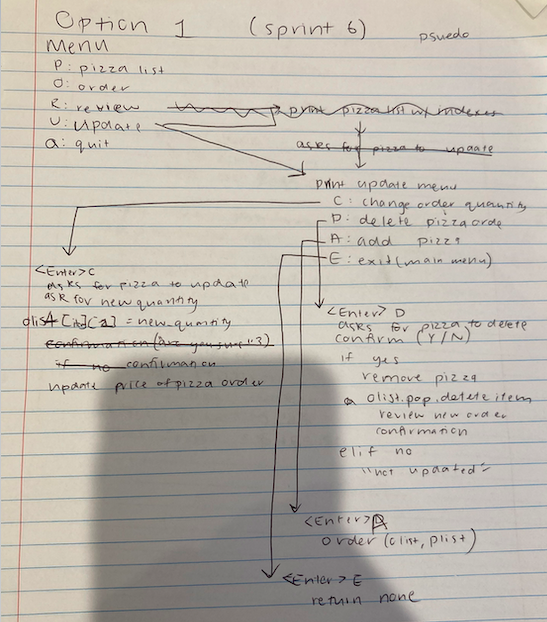Sprint Board
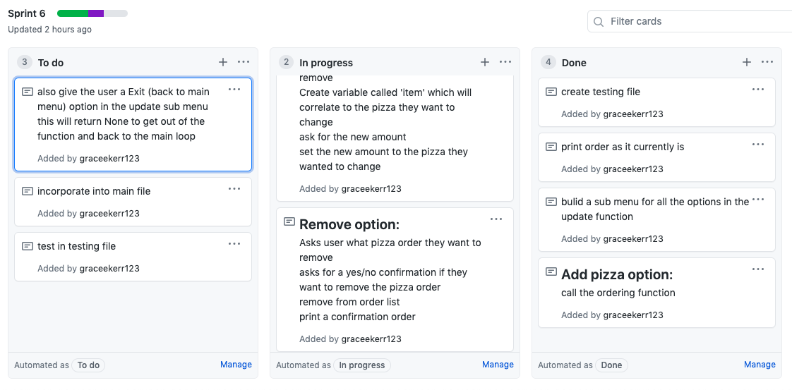Iterative Decision:
Option 1:
The update option leads straight to a update sub menu with options to change a quantity, delete a pizza order, add a pizza or go back to main menu. Once a option is chosen (except for the exit option) it will ask for the pizza that is wanted to be changed and then other steps will follow
Option 2:
The update option leads to ask the customer what pizza they would like to change. After that a update sub menu is printed with options to add, subtract, delete and exit.
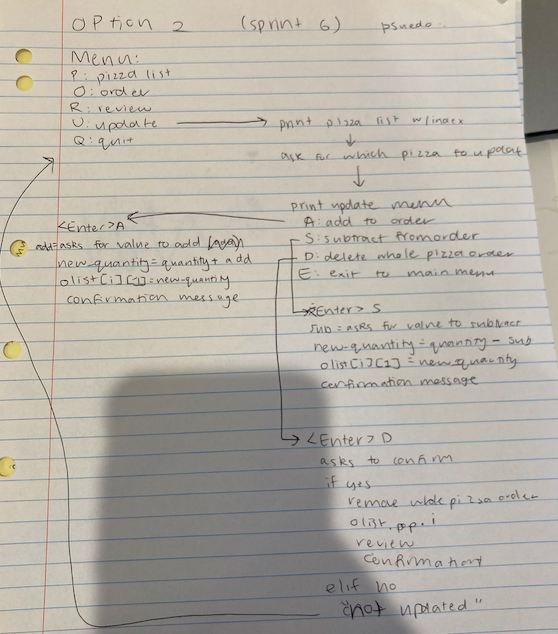Evaluation:
I believe option 1 is a better design than option 2. In my opinion, it was better to for the update function to go straight to the update sub menu to decide if they would like to change quantity or delete, rather than choosing what pizza order they want to change first. This is because, in Option 2, it's unclear to the user what the Update options there are, if the first thing they see when they select it is what pizza order they would like to change. Also, Option 2 is inconvient to the customer as if they decide they want to update a pizza but then quickly change their mind, they would have to answer some irrelevant questions. Option 1 is better, as if the user would like to exit from the update function quickly, they can press the E key right after they click the Update option. I also like the idea in Option 1 where it justs asks the customer about the new quantity. Whereas in Option 2, whre it asks if the customer would like to add/subtract is a little bit of an unnecessary step to the customer. I chose Option 1.
Problems I encountered:
This error was made because I had a loop to print the update sub-menu, but I never got out of it. As you can see, this lead to the update sub-menu looping and repeatedly printing out. To fix this I put the code after the printing of the update sub-menu, inline with the sub-menu. This ensure that the code will run and won't wait for the loop to finish.
Before:
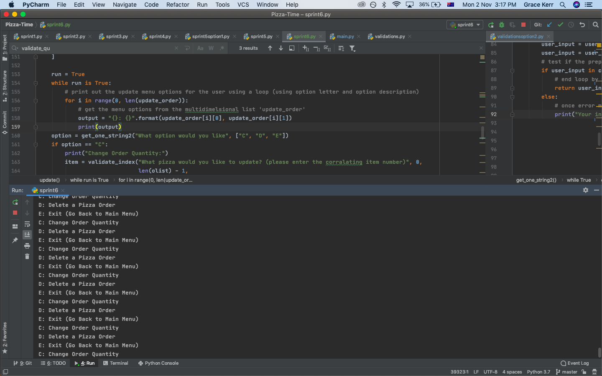Fix:
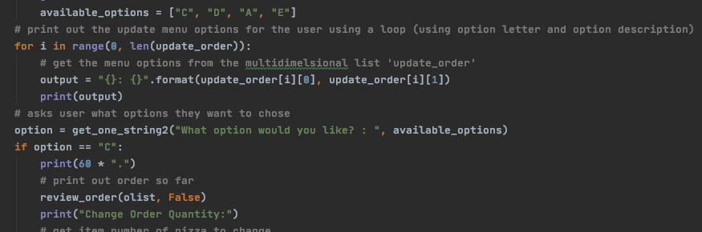Testing Plan:
Plan 1:
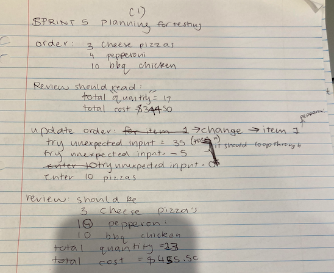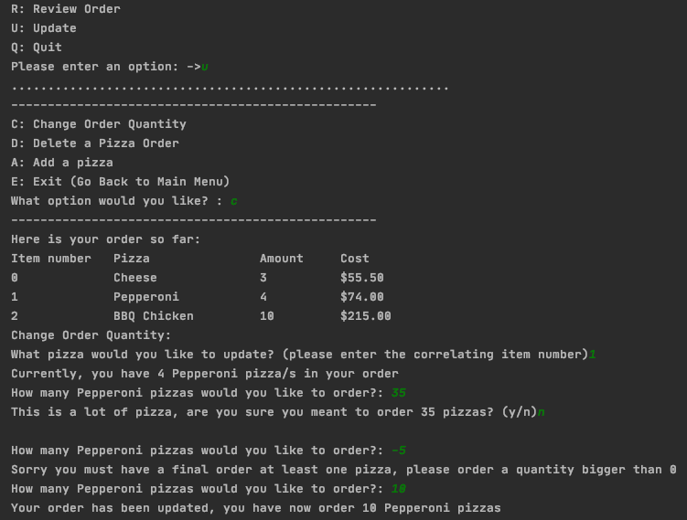 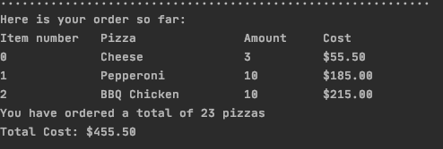
Plan 2:
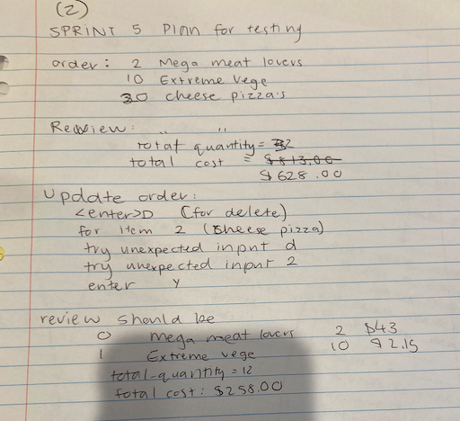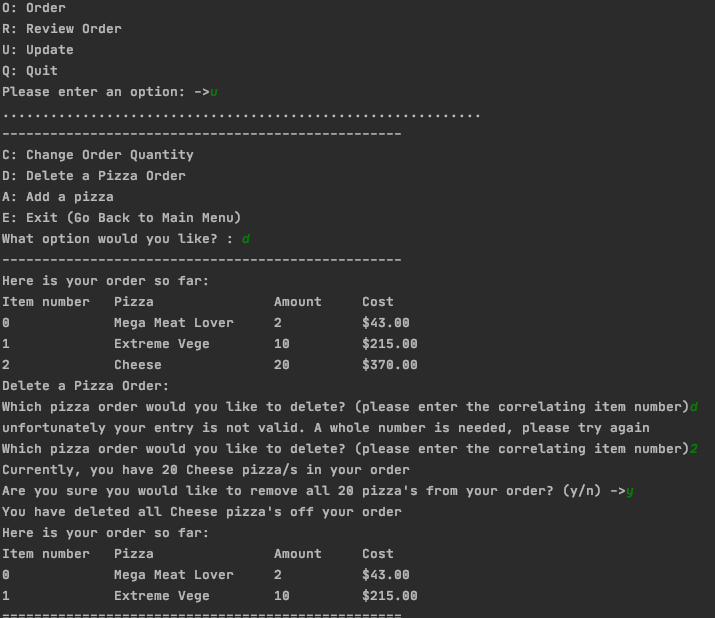
As you can my update function worked well and it enabled the customer to either change a quantity, remove a pizza order or add a new pizza. To make the testing effective, I entered unexpected inputs too. These two thorough tests were important for this stage of my program, as I got to test the newly added complexity. It helped to plan what I would input in the program before I did it on my computer as I was able to plan a wide variety of unexpected inputs.
User Story
I used a user story to thoroughly test my program. I saw that everything went as expected. I'm afraid the sound isn't working.
Final Reflection:
Throughout the process of buliding the update function I found that it was important to always let the customer know what's going on. This means having very good error messages and confirmation messages. This sprint went smoothly as I was mostly incorprating lots of conditional statements. I believe the reason behind not having many errors is because the validations I had made in sprint 3 and 4 made sure that any user input would end up valid.
What should I work on next? I think I need to make sure that I have a cancel feature in my prgram. I had this idea while working on the update function, because if the customer wanted to cancel their order and start again, they would have to delete every single pizza order and that isn't very user friendly. The feature of cancelling an order is now my prorioty.